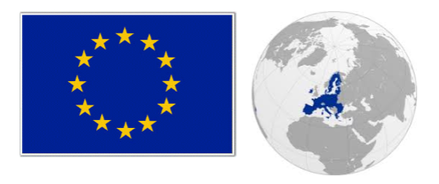
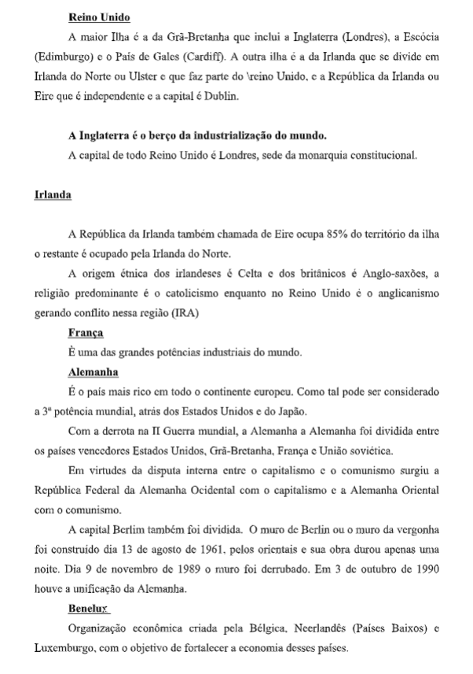

Capítulo 3: A União Europeia
A União europeia foi formada por meio de acordos e tratados assinados desde o início da década de 1950.Este é o bloco economico mais aintigo em formação e também o que se encontra em estágio mais avançado de integração.Por esse motivo, a União Europeia tem servido de modelo para aqueles blocos que buscam promover um maior nível de integração economico, monetária e politica.A união europeia, portanto, é o mais bem-sucedido modelo de integração entre países e possui um papel de destaque no cenário internacional, pois apresenta um PIB ( produto interno bruto), semelhante ao Estados Unidos e responde por cerca de 39% de todo o comércio mundial.Além disso, esse bloco econômico vem se fortalecendo cada vez mais com a inclusão de outros países do continente, sobretudo do leste europeu, com a Polônia, a Hungria e a República Tcheca,Outros países europeus também já solicitaram adesão ao bloco. O quadro abaixo mostra as etapas de constituição da união europeia.Leia as informações e, em seguida responda o solicitado.
Pesquise na internet e reflita sobre as seguintes questões:
1) Por que a União Europeia é um modelo para a formação dos demais blocos econômicos da atualidade?
2) Caracterize a união europeia como uma das principais potências econômicas do globo.
3) Quais são os problemas políticos e econômicos enfrentados por países europeus desenvolvidos?
Europa e CEI-Novas descobertasObserve o mapa da Europa, a península mais importante da superfície terrestre.
No conjunto de terras chamado Velho Mundo, a Europa, do ponto de vista físico ou geológico, é apenas uma península da Ásia. Do ponto de vista histórico- social, no entanto, a Europa é um continente, pois ao longo dos séculos desenvolveu uma cultura que a diferença da Ásia. A cultura europeia é ocidental, baseada no alfabeto latino, nas religiões judaico-cristãs e na ideia de progresso ou desenvolvimento material.
O continente europeu: Aspectos físicos, econômicos e humanos.Para melhor estudar a Europa vamos dividi-la em regiões: Europa Ocidental, Europa Setentrional, Europa Centro–Oriental e Europa Meridional ou Mediterrânea. Esta divisão segue uma distribuição espacial, levando em conta ao mesmo tempo critérios econômicos.
Europa Ocidental
É formada pelos chamados países Atlânticos, Reino Unido, Irlanda e França e os que mantêm ligação com o Atlântico através do Mar do Norte como os Países Baixos, Bélgica e Alemanha e ainda os países sem saída para o mar como a Áustria, Suíça, Luxemburgo e Liechtenstein. São os mais desenvolvidos e o berço da industrialização do mundo.
Europa Setentrional
São os países: Noruega, Suécia na Península Escandinava, Finlândia, Islândia e Dinamarca, e também desde 1990 a Estônia, Letônia e Lituânia.
Europa centro-oriental ( Leste europeu)
É formado pelos antigos países socialistas do Leste, Polônia, República Tcheca, Eslováquia, Hungria, Romênia, Bulgária, Albânia, Iugoslávia, Eslovênia, Croácia, Bósnia-Herzegovina e Macedônia; e pelas repúblicas que constituíam a antiga União Soviética em sua parte europeia: Belarus, Ucrânia, Moldávia, Geórgia, Armênia, Azerbaijão e Rússia.
Europa Meridional
Composta por países quase todos banhados pelo Mar Mediterrâneo, Portugal, Espanha, Itália, Grécia, Turquia europeia, além de vários pequenos países – Vaticano, San Marino, Mônaco, República Malta e Andorra. Estes países são os menores da Europa sendo que o Vaticano é o menor deles com apenas 0,44Km².
População europeia
A população europeia esta dividida em três grupos:
Germânicos : ocupam a parte central e norte da Europa, entre eles estão os alemães, os austríacos, holandeses, suecos, noruegueses e britânicos.
Eslavos: habitam a Europa Oriental, são os russos, poloneses, ucranianos, eslavos, tchecos e os sérvios.
Latinos: habitam a região meridional, ou seja, a área do mediterrâneo, são os portugueses, espanhóis, italianos e os franceses. Os romenos na europa oriental também são latinos.
Além desses grupos existem outros como os finlandeses, os húngaros, e os gregos.
Quanto a distribuição da população, a Europa é o 2ºmaior em população absoluta (somente a Ásia é maior que a Europa) e também em população relativa chegando a 71hab/km². Alguns países são super povoados como Mônaco e Malta, outros no extremo oposto tem baixa densidade demográfica como Noruega e Suécia.
A população europeia vive predominantemente na cidade. Do ponto de vista histórico, esse fato pode ser explicado pelo crescimento do comércio no fim da Idade Média e pelo pioneirismo no desenvolvimento industrial do continente. As atividades comerciais e industriais são fatores de concentração populacional, pois exigem significativa presença de mão-de-obra e mercado consumidor.
A Europa OcidentalA Indústria na Europa Ocidental
Em 1773 o inglês John Kay inventou a lançadeira volante acelerando a capacidade do velho tear manual. As invenções foram se sucedendo, criaram o tear mecânico, depois a máquina movida a vapor. Nasceram as fábricas, a divisão do trabalho e assim a indústria foi se desenvolvendo. Nascia a Primeira Revolução Industrial.
Outra grande novidade foi em meados do séc. XIX ( II Revolução Industrial) a substituição da energia fornecida pelo carvão por energia elétrica.
Importantes zonas industriais se instalaram na Inglaterra, França, Alemanha, Holanda, Suíça e Áustria.
Na Europa aconteceram outros grupos de integração econômica culminando com a União Europeia. A união Soviética (URSS- União das Repúblicas Socialistas Soviéticas) foi perdendo sua capacidade de gerar riqueza e investimentos, a engrenagem estatal foi emperrando e o descontentamento da população com a chamada linha dura generalizou- se. Assim, a partir dos anos 1960 a economia dos países socialistas começou a mostrar sinais de desaceleração. Os países bálticos foram os primeiros a declararem Europa Setentrional Essa região caracteriza-se por apresentar forte influência dos fatores naturais sobre a ocupação do espaço, principalmente no extremo norte, onde predomina o gelo continental. Na porção sul da região está as maiores concentrações populacionais e as principais atividades econômicas regionais. Isso significa uma irregular distribuição populacional na região, que também apresenta uma das mais baixas densidades demográficas de todo o continente europeu.
Os países nórdicosSuécia, Noruega, Finlândia, Dinamarca e Islândia - apresentam elevado nível de vida, excelentes indicadores sociais e alto poder de consumo. A Suécia é o mais desenvolvido e industrializado da região. A Noruega a Suécia que ficam na península Escandinava mais a Dinamarca que ficam no arquipélago e península da Jutlândia formam a Escandinávia.
Paisagens tropicais e a ocupação do espaçoA maior riqueza dessa região são as florestas de coníferas (pinheiros). A exploração florestal é sua maior fonte de riqueza e a base de uma série de indústrias. O frio intenso do inverno prolongado dificulta as atividades ligadas à agricultura e à pecuária, mas tem-se ampliado a produção intensa, com técnicas aprimoradas, em campos fechados e climatizados. A atividade pesqueira, no entanto, é intensa, principalmente na Noruega. Além da forte presença de indústria de madeira, a Suécia e a Noruega são grandes produtores navais e possuem um parque siderúrgico desenvolvido com destaque também para a indústria de alimento, cerâmica e vidros. Na região (Finlândia) a empresa NOKIA (setor de telecomunicações) é um dos maiores grupos privados do país, com filiais em mais de cinquenta nações. Apesar das condições climáticas dessa região, destaca-se a produção agropecuária, principalmente laticínios, derivados de carne e ovos, e colhem trigo, cevada, aveia e centeio.
As repúblicas BálticasOs países bálticos são assim chamados por ser banhado pelo mar Báltico, os países são: Estônia, Lituânia e Letônia. Até 1940, esses países eram independentes. A partir daí foram anexados a União Soviética tornando-se repúblicas Socialistas. Na década de 1980 com as dificuldades econômicas e a instabilidade política na União Soviética reaqueceram o nacionalismo dessas repúblicas. Em 1990 tornaram-se independentes dando início a um processo que se espalhou pelas demais repúblicas socialistas. Os países bálticos passaram a ter a tarefa de reconstruir um estado independente e capitalista.
Europa centro OrientalRegião centro oriental da Europa que reúne todos os países que integravam o bloco socialista europeu. Atualmente, todas as nações têm passado por um amplo programa de reformas que visam adaptar sua economia às regras do mercado capitalista e da liberdade democrática. As dificuldades ligadas a transição são inúmeras as desigualdades também, desde a falta de recursos para investir nos setores mais carentes até a falta de mão-de- obra competitiva para enfrentar a concorrência no mercado globalizado. Os problemas acontecem tanto nas nações mais pobres como a Albânia até a mais poderosa como a Rússia.
Sua independência e em seguida as demais repúblicas. Dia 21 de dezembro de 1991 no Cazaquistão firmou-se o acordo pelo qual a União Soviética foi extinta e foi criado o CEI – Comunidade dos Estados Independentes
Federação RussaE o país mais extenso do mundo e ocupa os continentes europeu e asiático. Sua parte europeia é a menor, mas é onde se encontra o centro econômico e político e a maior concentração populacional. A industrialização na Rússia teve impulso após a II Guerra Mundial e baseia-se na indústria de base. O país era o maior produtor de petróleo do mundo favorecendo a indústria petroquímica, e possui expressivas reservas de minério de ferro e de carvão desenvolvendo centros siderúrgicos. Devido às dimensões do país a grande preocupação é o setor de transporte, sendo que as ferrovias são responsáveis pelos transportes em geral. A Ferrovia Transiberiana é a maior do mundo com 9.334quilômetros, liga Moscou a Vladivostok, importante porto no extremo leste do país. As vias fluviais têm sido melhoradas, assim também como a marinha mercante e o transporte rodoviário apesar do alto custo esta havendo uma mudança pelo aumento na produção de veículos automotivos.
No setor nuclear a Rússia dispõe de importantes reservas de minerais radioativos, como o urânio e tório, após o desastre de Chernobyl (Ucrânia) em 1986 a Rússia não expandiu seu programa nuclear. Organizações ambientalistas e a população têm se manifestado contra a instalação de novas usinas mesmo que na Sibéria. No setor primário a produção agrícola desenvolve a cevada, trigo aveia, milho, arroz, sorgo, legumes verduras, tabaco, chá, uva. O sistema agrícola ainda é arcaico e dependente do clima. A transição do comunismo para o socialismo está sendo difícil, mas a Rússia tem procurado se aproximar da União Europeia, dos Estados Unidos e do Japão. Desde 1997 o país passou a fazer parte da cúpula dos oito e seu maior parceiro comercial é a Alemanha. Porém a Rússia não vê com simpatia a força dos Estados Unidos no atual cenário geopolítico, por isso tem se aproximado da sua antiga rival, a China.
CEI – Comunidade dos Estados Independentes A Comunidade dos estados Independentes não é um país, mas uma organização de cooperação entre os países que obtiveram a independência depois de integrados durante décadas à União Soviética. O mais importante é a Rússia os outros são: Belarus, Geórgia, Armênia, Azerbaijão, Cazaquistão, Quirguízia, Moldávia, Tajiquistão, Turcomenistão, Ucrânia e Uzbequistão. Sendo que as europeias são: Belarus, Ucrânia, Moldávia, Geórgia, Armênia, Azerbaijão, e outras são asiáticas. As repúblicas dependem umas das outras para garantir a produção industrial e todas dependem da Rússia, que lhes fornece equipamentos e tecnologia. Na Europa Centro Oriental, o conjunto dos países europeus em transição do socialismo para o capitalismo é conhecido como Europa do Leste ou Europa Oriental ou ainda o Leste europeu. Nessa região podemos encontrar quatro grupos de países. * Os países da Europa Central: Polônia, República Tcheca, Eslováquia, Hungria e Romênia. * Países localizados na península Balcânica e que também pode ser englobados no conjunto formado pela Europa meridional: Iugoslávia, Croácia, Eslovênia, Macedônia, Bósnia-Herzegovina, Bulgária e Albânia. * Os países bálticos: Estônia, Letônia e Lituânia (já estudados na Europa Setentrional). * A porção europeia do CEI.
A Região CentralOs países da região Central são os mais industrializados de toda a porção centro- oriental. O segundo lugar é o da República Techeca que possui a mais alta renda per capta E em geral, os melhores indicadores sociais da Europa central. Em 1918 nascia à República Tchecoslováquia, (duas etnias diferentes). Em 1992 ocorreu a separação pacífica entre tchecos e eslovacos, constituindo cada povo seu país. Na Eslováquia os indicadores sociais e econômicos da Eslováquia são mais baixos. Polônia
A Polônia é o país mais populoso e o segundo mais povoado da Europa Central.
Em setembro de 1975 os poloneses fundaram o primeiro sindicato livre de toda a Europa do Leste, o Solidariedade, que se tornou um símbolo de luta pela liberdade e por melhores condições de vida em boa parte do mundo. Em dezembro de 1990 Lech Walesa líder do sindicato solidariedade tornou-se o primeiro presidente eleito na Polônia. A Hungria, era um país tradicionalmente agrícola e tornou-se industrializado após a adoção do sistema de economia planificada. A Romênia é um dos países que apresenta os piores indicadores socioeconômico da Europa central. A península Balcânica Por ser uma região de passagem entre o Ocidente e o Oriente, na península Balcânica sofreu no passado a influência de diversos povos, por isso, apresenta uma população variada e de diferentes origens. Dois países da península, Grécia e um pedaço da Turquia pertencem a Europa Meridional. Mas a maioria das nações localizadas no território balcânico passou por uma experiência socialista: Iugoslávia, Croácia, Eslovênia, Macedônia, Bósnia- Herzegovina, Bulgária e Albânia. A Eslovênia é a que mais se destaca economicamente, e a economia mais baixa é a Bósnia e a Albânia. Europa meridional
A região Meridional europeias compreende Portugal e Espanha situada na península Ibérica, a Itália localizada na península Itálica, a Grécia, uma parte da Turquia e outros pequenos países. Atividades econômicas Na estrutura produtiva da Europa Mediterrânea, a agricultura tem um peso importante na geração das rendas nacionais e de emprego, particularmente em Portugal e Grécia. Cultivam uva , sendo importante produtor de vinho, cereais, frutas e hortaliças. Devido ao clima semiárido utilizam irrigações, tecnologia avançada. Em Portugal se destaca o cultivo das oliveiras. A pecuária é desenvolvida tanto por meio da prática intensiva e extensiva. O turismo é outra atividade básica de financiamento da economia de toda a região, sobretudo na Espanha e na Itália.